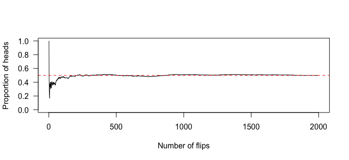

- ①② 550_Notes_Intro to Probability ／ Probability Terms
- ③④ Probability & Odds
ランダムな試行・標本空間・事象
ランダムな試行（random experiment）は、結果がはっきり決まっていて、どれになるかは偶然で決まる手続きです。コイン投げ、サイコロ、Web 広告のクリック（する／しない）、株価の1年後（上がる／下がる／変わらない）など。
| 用語 | 意味 | サイコロ1個の例 |
|---|---|---|
| 標本空間 S | 起こりうる結果すべて | S = {1, 2, 3, 4, 5, 6} |
| 結果 outcome | S の要素1つ | 4 |
| 事象 event | 結果の集まり | 偶数 E = {2, 4, 6} |
| 根元事象 simple event | 結果1つだけの事象 | {6} |
コインを2回投げると、S = {(表,表), (表,裏), (裏,表), (裏,裏)} の4通りです。「(表,裏)」と「(裏,表)」は別の結果であることに注意しましょう。
標本空間＝くじ箱の中身全部、事象＝その中で「当たり」と決めたくじの集まり。
R でランダムな試行をシミュレーションする
sample(候補, size = 回数, replace = TRUE) で、候補から無作為に選べます。replace = TRUE は復元抽出（選んだものを戻す＝サイコロをくり返し振る）です。
die <- 1:6 set.seed(2026) sample(die, size = 10, replace = TRUE)
乱数は実行のたびに変わります。set.seed() で種を決めると、同じ結果を再現できます（レポートや課題で大切）。
sample(die, size = 6, replace = FALSE) sample(die, size = 7, replace = FALSE)
replace = FALSE（非復元抽出）では、一度選んだものは戻らないので、候補の数（6）より多くは選べずエラーになります。名簿から重複なく人を選ぶときは FALSE、サイコロのようにくり返すときは TRUE。確率とオッズ
📐 オッズ ＝ 成功の数 ÷ 失敗の数（「成功:失敗」とも書く）
サイコロで偶数が出る確率は 3/6 = 0.5、オッズは 3:3 = 1:1。6 が出る確率は 1/6、オッズは 1:5 です。
データから確率を推定することもできます。あるオンラインショップの1か月の注文 2,500 件のうち、返品が 175 件だったとします（架空のデータ）。
orders <- 2500 returns <- 175 returns / orders # probability of a return returns / (orders - returns) # odds of a return
「無作為に1件選ぶと、約 7% の確率で返品」「長い目で見ると約 7% が返品」と解釈します。オッズは約 0.075（≒ 1:13）。
175 / 2,500 とカンマ付きで書くとエラーです。また a + b + c / total は「c だけを total で割ってから足す」計算になります。分子全体をかっこで囲む：(a + b + c) / total。| 範囲 | 例 | |
|---|---|---|
| 確率 probability | 0〜1（0＝起こらない、1＝必ず起こる） | 0.07 |
| 百分率 percentage | 0%〜100% | 7% |
| 割合 proportion | 確率と同じ数値。ただし「偶然」の意味は含まない | 全注文の 7% が返品 |
大数の法則
コインを投げた回数が少ないと、表の割合は 0.5 から大きくずれます。回数を増やすと、割合はだんだん 0.5 に近づきます。これが大数の法則（law of large numbers）で、確率を「長い目で見た相対度数」と解釈する根拠です。
set.seed(550) flips <- sample(c("H", "T"), size = 2000, replace = TRUE) prop_heads <- cumsum(flips == "H") / seq_along(flips) prop_heads[c(10, 100, 1000, 2000)] plot(prop_heads, type = "l", ylim = c(0, 1), las = 1, xlab = "Number of flips", ylab = "Proportion of heads") abline(h = 0.5, col = "red", lty = 2)

set.seed(1) のあと、サイコロを 6000 回振るシミュレーションをして、6 が出た割合を求めてください（理論値は 1/6 ≈ 0.167）。
set.seed(1) rolls <- sample(1:6, size = 6000, replace = TRUE) mean(rolls == 6)
rolls == 6 は TRUE/FALSE のベクトル。mean() を取ると TRUE の割合になる。結果は 1/6 に近い値になる。